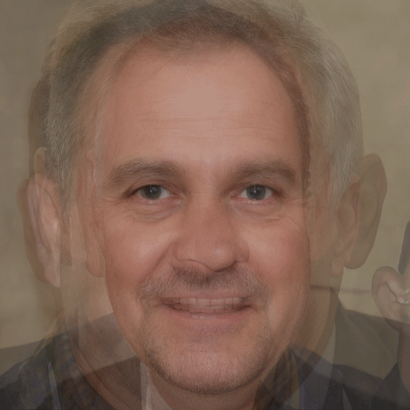

Aldon Chen
Haptics and Optics Fall 2020
Discriminator
Men
Women
Older Men
Older Women
Asian
About
Discriminator is an experiment by Aldon Chen for Haptics and Optics, Fall of 2020. Using a generative adversarial network (GAN), I collected 78 procedurally genereted photo portraits of people that don't exist. In Discriminator I used this collection to make a series of animated portraits which attempt to study the biases in artificial intelligence and algorithms by finding key elements the GAN attributes to certain groups.